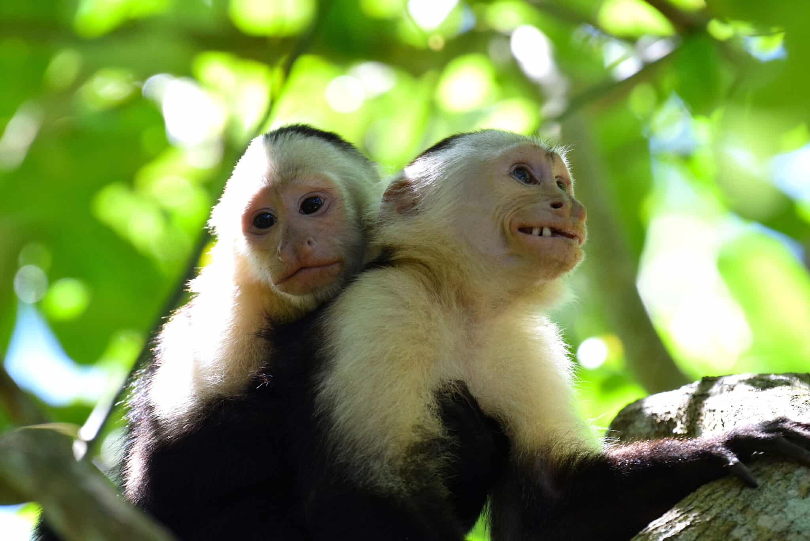
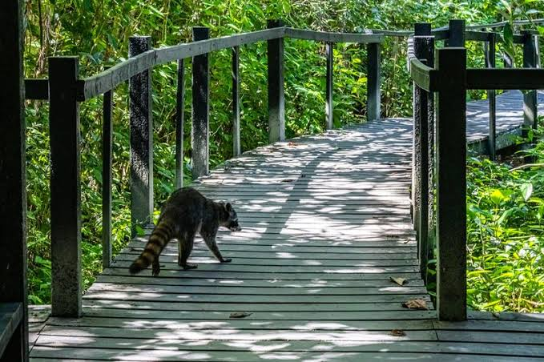

Ecosistema Marino
Alberga el arrecife de coral más estructurado del Caribe costarricense, con más de 35 especies de corales duros y más de 120 especies de peces multicolores.
Historia, biodiversidad y el modelo único de conservación del Parque Nacional Cahuita.
Bienvenidos a Cahuita El Parque Nacional Cahuita es el lugar donde la exuberante selva tropical de Costa Rica se fusiona directamente con las aguas turquesas del mar Caribe. Diseñado para los amantes de la naturaleza y la aventura, nuestro parque ofrece un sendero plano y accesible de 8 kilómetros que bordea la costa, convirtiéndolo en el destino ideal para familias, senderistas y observadores de vida silvestre. Aquí es sumamente fácil caminar junto a perezosos, monos carablanca, iguanas y tucanes en su hábitat natural. Además de su biodiversidad terrestre, protegemos el arrecife de coral más desarrollado de la costa caribeña del país, un paraíso subacuático perfecto para el snórkel guiado. Nos enorgullece ser un parque único gestionado en conjunto por el gobierno y nuestra comunidad local; gracias a este esfuerzo, mantenemos accesos basados en contribuciones voluntarias y servicios de salvavidas comunitarios para que disfrutes de playas seguras, limpias y vírgenes. Te invitamos a explorar este santuario natural, sumergirte en nuestra cultura caribeña y vivir una experiencia auténtica y sostenible.
Alberga el arrecife de coral más estructurado del Caribe costarricense, con más de 35 especies de corales duros y más de 120 especies de peces multicolores.

Durante el recorrido es habitual observar perezosos de dos y tres dedos, monos aulladores, cariblancos, tucanes, iguanas y basiliscos.

Playa Blanca: Entrada por el pueblo con contribución voluntaria.
Puerto Vargas: Entrada principal con tarifa oficial.
Facilidades y actividades disponibles para hacer de tu experiencia un recuerdo inolvidable.

Recorre el famoso sendero de 8 km que conecta Playa Blanca con Puerto Vargas. Es una caminata totalmente plana, accesible y rodeada de mar y jungla.

Disfruta de la barrera de coral en compañía de guías locales certificados. La actividad incluye equipo, transporte en lancha y avistamiento de fauna marina.
Envíanos tus preguntas sobre visitas guiadas, estado del clima o normas del parque.